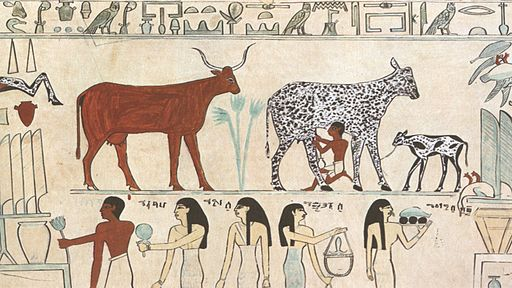

This model represents the spread of a disease within two populations - a non-human animal population and an associated human population - as well as the spread of the disease from animals to humans.
This version is based on a model implemented in Sysdea, and available for viewing and running on the Sysdea web site. This version does not attempt to be an exact clone of the Sysdea version: for example, the equation used to represent the rate of animals or humans becoming infected has been changed; some variable names have been changed to fit in with Systo naming conventions; and a full check of parameter values and equations has not been undertaken. Nevertheless, the two versions are similar enough to allow comparison of their impementations in the two platforms.
The diagram shows two separate flow pathways. The upper one represents the number of people in different stages of the disease - susceptible, infected or resistant (recovered). The lower one is the same for the animal population. The flow arrows represent the rate at which people change from one disease state to another, or are born/die.
Note that the diagram is interactive. You can zoom in/out; pan the diagram (by dragging on a blank area of the diagram; re-arrange bits of the diagram by dragging nodes or arrows around; and change the level of detail shown (by clicking on the 1/2/3 button).
To explore the behaviour of the model, simply move the sliders for the initial stock value or the parameter value, and the graphs will be updated.